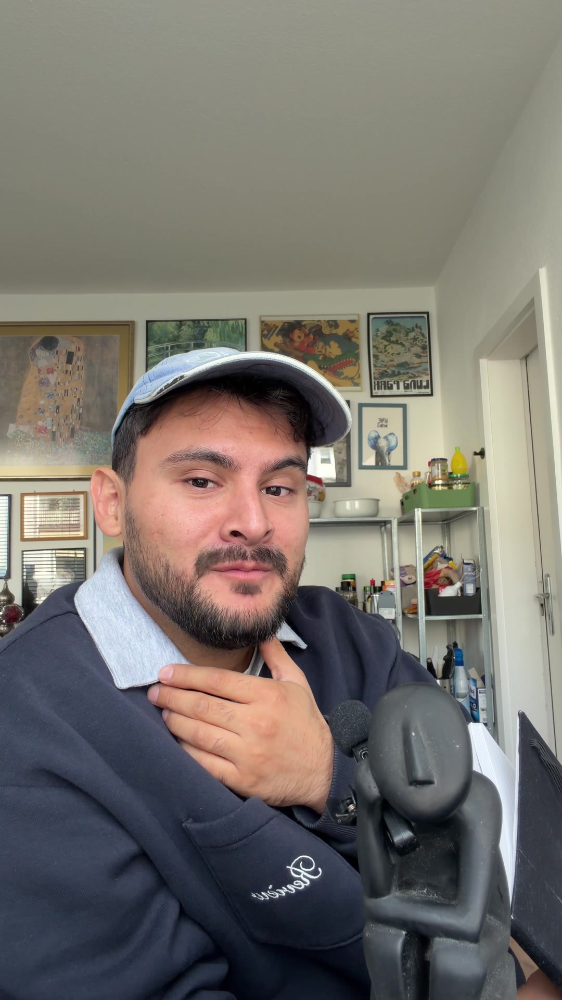
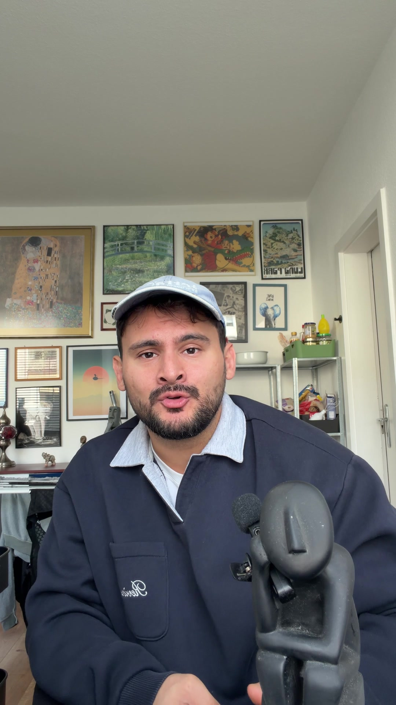
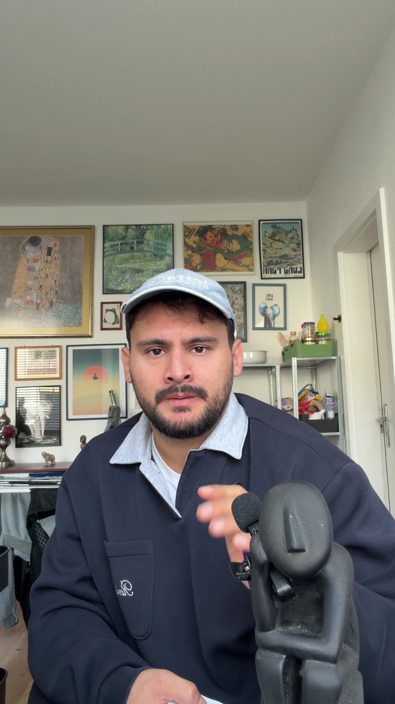
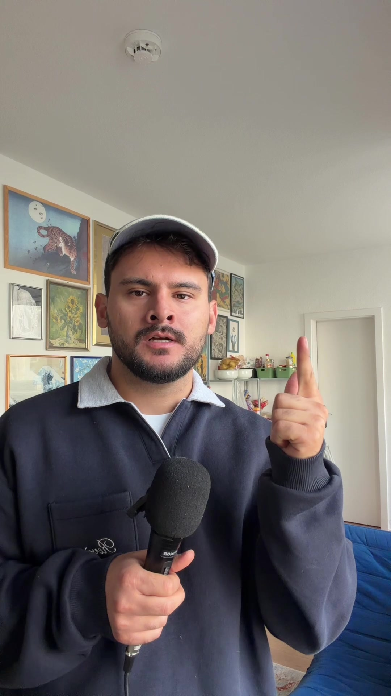
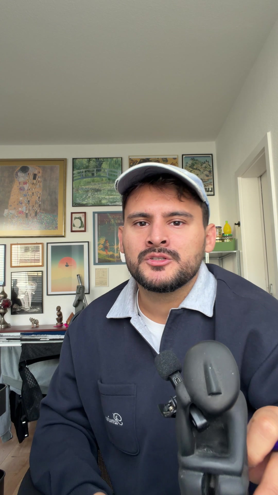
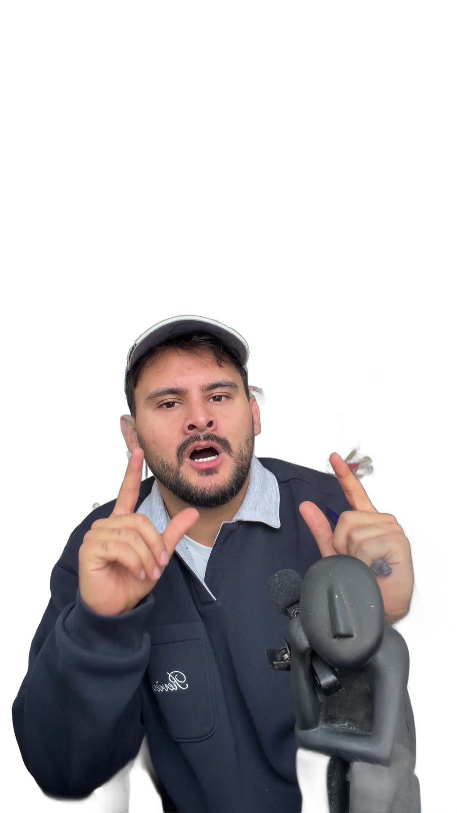
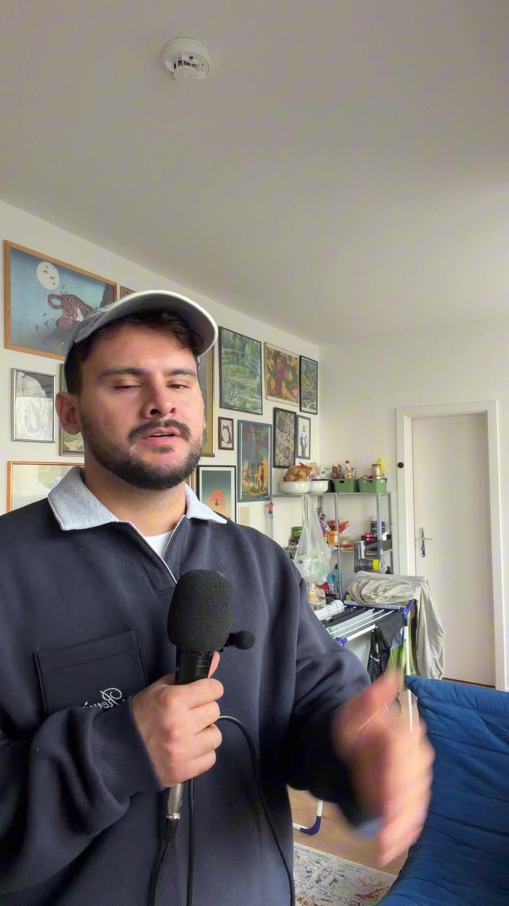
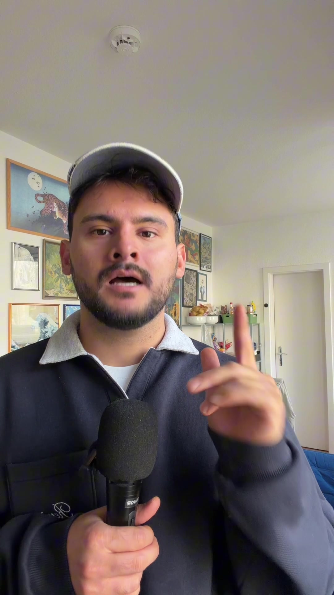

Jedes Element aus „Klar mit Kante“ auf deinen echten Standbildern. Ein Klick auf das Bild oder auf Abspielen startet die Bewegung. Jede Animation läuft einmal und bleibt dann stehen. Untertitel wechseln hart, ohne Animation.
Ausklingen: cubic-bezier(0.22, 1, 0.36, 1)Abfedern: cubic-bezier(0.34, 1.56, 0.64, 1)Linear: nur beim Ausblenden
Einstieg bei 0:00
DESIGN.md 6 und 11.1

FAST 30
10 Lektionen für mein 20-jähriges Ich
erwachsen werden in
Startsteht ab dem ersten Bild, ohne Bewegung, weil es zugleich das Thumbnail ist
EndeH1 blendet in 0,18 s aus, 8 px nach oben, Linear. H2 folgt 0,06 s später
Kapitel
neu

6.
Keiner rettet dich
dass jemand kommt
Zahlschreibt sich von links nach rechts, 0,40 s, Ausklingen
Titelab 0,35 s, 14 px von unten, 0,22 s, Ausklingen
Aufzählung mit Pillen
neu

3.
Die großen Drei
1
Stadt
2
Umfeld
3
Partner
und meist
Überschriftwie beim Kapitel
Pilleneinzeln am gesprochenen Wort, Pop von 80 auf 100 %, 0,30 s, Abfedern
Die Zeitpunkte 0,9 / 1,5 / 2,1 s sind Beispiele. Im Video zählt das Wort.
Akronym, große Buchstaben
neu

A
R
T
Action · was du genau machst
Result · am besten eine Zahl
Transformation · was es gebracht hat
und Transformation.
BuchstabenPop von 55 auf 100 %, je 0,08 s versetzt, Abfedern
Aktivharter Wechsel auf Blau am gesprochenen Wort
PillePop 0,30 s, die alte blendet vorher kurz aus
Schlagwort
DESIGN.md 15

NIEMALS
Stoßzoomharter Sprung auf 112 %, ohne Überblendung
WortPop von 55 auf 100 %, 0,30 s, Abfedern
Stricheziehen sich von links, je 0,25 s, der zweite 0,15 s später
Grafik mit Green Screen
neu
ETF · 100 €/Monat · 10 % p. a.

Aber wenn du
KartePop von 90 auf 100 %, 0,35 s, Abfedern
Liniezeichnet sich von links nach rechts, 1,0 s, Ausklingen
Kreisdanach, 0,30 s
Randnotiz, Vorher und Nachher
DESIGN.md 11.7

LÜGEN IM CV
Betreuung von
Social Media
10Kanäle
+15 %Follower
in90Tagen
+20 %Budget
Betreuung von 10
Zeileam gesprochenen Wort, 14 px von unten, 0,22 s, Ausklingen
Strichwächst von links, 0,28 s, jede weitere Zeile 0,1 s später
Werte wie bisher, nur mit pinkem, handgezeichnetem Strich.
Sprechblase
DESIGN.md 11.5

Yo, hab da mal ne Frage zum CV
mich, schreib mir eine
Tippenploppt auf, 0,25 s, die Punkte laufen
Nachrichtab 1,75 s, 0,80 s, Pop 82 → 103 → 100 %, das Tippen rutscht darunter